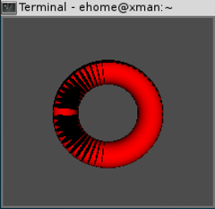
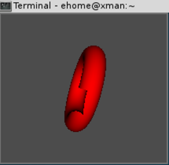
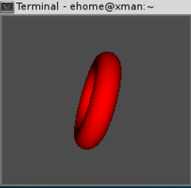
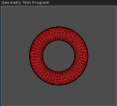
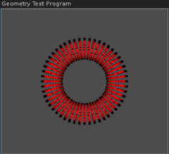

创建实心物体
1 创建实心物体
1.1 代码
1.2 输出

一些某些远端三角形绘制在近端三角形之上的对象
1.3 分析
这个程序说明了组成3D物体的一些概念。在窗口中右键单击，将会出现一个 Effects 菜单，可用于启用或禁用一些3D绘图功能。
2 正面和背面剔除
- 作用：消除已经知道肯定不会被绘制的几何图形，以获得显著的性能提高。
一般表面剔除按如下方式开启。
glEnable(GL_CULL_FACE);
相应的，按照如下方式关闭。
glDisable(GL_CULL_FACE);
请注意，我们并没有指明剔除的是正面还是背面。这是由另外一个函数
glCullFace控制的。void glCullFace(GLenum mode);
mode的参数的可用值为
GL_FRONT、GL_Back或GL_FRONT_AND_BACK。这样，要消除不透明物体的物体的内部几何图形就需要两行代码。glCullFace(GL_BACK); glEnable(GL_CULL_FACE);

消除了背面三角形，但自身重叠的对象在不使用深度测试的情况下可能出问题
3 深度测试
- 作用：使z值较大的像素点靠近观察者，覆盖z值较小的像素点
最后一个绘制的物体会出现在以前绘制的所有物体的前面（有点类似图层）。为了把这些物体放到后面，我们可以使用一种称为 深度测试 的特性来消除这种现象。
深度测试是一种有效的用于隐藏表面消除的技巧，OpenGL提供了一些函数，允许在幕后完成这个任务。它的概念非常简单：当一个像素被绘制时，它将被设置一个值（称为z值），以表示它和观察者之间的距离。以后，当这个屏幕为只需要绘制另一个像素时，新像素的z值就会与原先已经存储的那个像素进行比较。如果新像素的z值更高，它就更靠近观察者，因此位于以前那个像素的前面。否则它必须位于原先那个像素的后面，且不能遮住前面的那个像素。在内部，这个任务是通过深度缓冲区实现的，它存储了屏幕上每个像素的深度值。
我们在使用GLUT设置OpenGL窗口的时候，应该请求一个深度缓冲区。例如，我们可以按照如下方式申请一个颜色缓冲区和一个深度缓冲区。
glutInitDisplayMode(GLUT_DOUBLE | GLUT_RGBA | GLUT_DEPTH);
为了启动深度测试，只要简单的调用
glEnable(GL_DEPTH_TEST);

使用深度测试
4 多边形模式
void glPolygonMode(GLenum face, GLenum mode);
- face 的取值：我们可以对多边形的两面（
GL_FRONT_AND_BACK）都应用这个渲染模式，也可以只对多边形的正面（GL_FRONT）或背面（GL_BACK）应用这个模式。 - mode 的取值：在默认情况下，多边形被绘制成实心（
GL_FILL）的。但是，也可以改变这个行为，指定只绘制多边形的外框（GL_LINE），甚至只绘制点（GL_POINT）。glPolygonMode函数允许多边形作为实心图形、外框或者点进行渲染。

使用 glPolygonMode 把多边形的正面和背面设为线框模式

使用 glPolygonMode 把多边形的正面和背面设为点云模式
5 多边形偏移
虽然深度测试能够实现真实视觉并提高性能，但有时候我们需要稍微“蒙骗”一下。这种情况发生在有意要将几个几何图形绘制到同一深度时，用来避免产生 z-fighting （z冲突）问题。
glPolygonOffset 函数使我们可以调节片段的深度值，这样就能 使深度值产生偏移 而并不实际改变3D空间中的物理位置。
void glPolygonOffset(GLfloat factor, GLfloat units);
应用到片段上的总偏移可以用下面的方程式来表示。
\[ \mbox{Depth Offset} = (\mbox{DZ} \times \mbox{factor}) + (r \times \mbox{units}) \]
其中 \(\mbox{DZ}\) 是深度值（z值）相对于多边形屏幕区域的变化量，而r则是使深度缓冲区值产生变化的最小值。并没有一个硬性规定能够找到一个万无一失的值，我们具体运用的时候还可能需要试验一下。
负值将使z值距离我们更近，而正值则会将它们移动得更远。对于Primitives示例程序来说，我们将factor和units参数的值都设置为-1.0。
除了使用 glPolygonOffset 设置偏移值之外，还必须启用多边形单独偏移来填充几何图形（ GL_POLYGON_OFFSET_FILL ）、线（ GL_POLYGON_OFFSET_LINE ）和点（ GL_POLYGON_OFFSET_POINT ）。下面的代码显示了Primitives示例程序中的一个函数，这个函数绘制了一批绿色的几何图形，并在上面绘制了它们的黑色线框。请注意，我们为了使显示效果更好，在轮廓上使用了更粗的抗锯齿线。在接下来关于混合的内容中，我们将进一步讨论抗锯齿。
///////////////////////////////////////////////////////////////////////// void DrawWireFramedBatch(GLBatch* pBatch) { // Draw the batch solid green shaderManager.UseStockShader(GLT_SHADER_FLAT, transformPipeline.GetModelViewProjectionMatrix(), vGreen); pBatch->Draw(); // Draw black outline glPolygonOffset(-1.0f, -1.0f); // Shift depth values glEnable(GL_POLYGON_OFFSET_LINE); // Draw lines antialiased glEnable(GL_LINE_SMOOTH); glEnable(GL_BLEND); glBlendFunc(GL_SRC_ALPHA, GL_ONE_MINUS_SRC_ALPHA); // Draw black wireframe version of geometry glPolygonMode(GL_FRONT_AND_BACK, GL_LINE); glLineWidth(2.5f); shaderManager.UseStockShader(GLT_SHADER_FLAT, transformPipeline.GetModelViewProjectionMatrix(), vBlack); pBatch->Draw(); // Put everything back the way we found it glPolygonMode(GL_FRONT_AND_BACK, GL_FILL); glDisable(GL_POLYGON_OFFSET_LINE); glLineWidth(1.0f); glDisable(GL_BLEND); glDisable(GL_LINE_SMOOTH); }
6 用剪刀进行裁剪
有一种提高渲染技能的方法是只对屏幕上进行了修改的部分进行更新。我们还可能需要让OpenGL 把渲染区域限制在窗口内部一块更小的矩形区域中 。OpenGL允许在窗口中指定一个裁剪矩形，让渲染只在这个区域内进行。在默认情况下，裁剪矩形就是窗口的大小，不会进行裁剪测试。我们可以使用下面这个glEnable调用来打开裁剪测试。
glEnable(GL_SCISSOR_TEST);
窗口内部执行渲染的那个区域称为裁剪框（scissor box） ，它是用下面这个函数以窗口坐标（像素）的形式指定的。
void glScissor(GLint x, GLint y, GLsizei width, GLsizei height);
x和y参数指定了裁剪框的左下角，width和height参数则分别指定了裁剪框的宽度和高度。下面的程序显示了示例程序SCISSOR的渲染代码。这个程序清除了3次颜色缓冲区，每次在清楚之前都指定一个更小的裁剪框，其结果是一组重叠的着色模型。
6.1 示例代码
CANNOT INCLUDE FILE ./program/opengl/Src/Chapter03/Scissor/Scissor.cpp